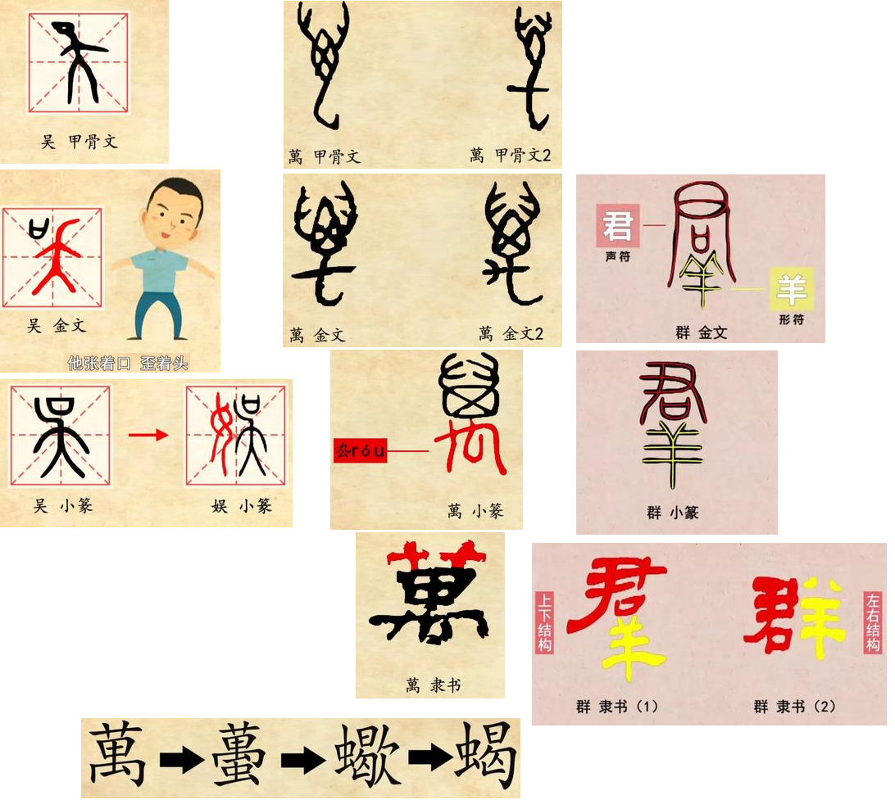

甲骨文的吴字就像一个人侧歪着头部正在舞蹈.汉字解密｜想不到吧，吴字竟然和手舞足蹈有关！
金文的吴字有所变化，它在头部的左边或者右边加了一个口，似乎是在强调这个人不仅手舞足蹈，而且高声说话，或者喧哗。清末民初的学者林义光先生认为，吴字所从的夨象一个人倾头之形，他张着口，歪着头，正在作欢呼之象
小篆的吴字变化不大，说文解字里面说：吴，大言也，意思就是说大话。需要指出的是，我们今天总是说口天吴，口天吴，其实吴字从口从夨，夨就像一个人歪着头。
从吴的字有一个娱乐的娱字，吴这个字的娱乐本义消失之后，篆文就在吴字的左边加一个女旁，另外造了一个娱乐的娱字。今天的吴字极少组成词，一般只作姓氏用。
吴姓的主体是吴国的后裔。他出自黄帝的姬姓，是周文王姬昌的伯父太伯和仲雍的后代，周立国之后就受封了。其中一支就封在江南的句吴地区，一支封在周原附近的虞。吴国到春秋末年被越国所灭，后人以国名吴为姓，这是目前大多数吴姓人公认的吴姓的起源。另外，由于上古时期虞和吴同音通用，所以部分姚姓的虞氏，以及虞国的后人也以吴为姓。
吴字的另一个用法是作地名用。因为吴国的关系，吴字作为地名是极其常见的。我们主要说一下成语吴下阿蒙的由来。孙权曾经对大将吕蒙说，今天你管事了，不可不学习！吕蒙推辞说，军中事务繁多，我抽不出时间。孙权于是说：“我难道是要你去治经当博士吗？我只是要你多多涉猎，多了解一下古人的行事罢了。 你说你事多，你比我怎么样？我都常常读书，自以为大有收获。”吕蒙于是开始天天多读一点书。过了一段时间，鲁肃经过寻阳，也就是今天的九江，他跟吕蒙交谈的时候，非常吃惊，他说：“你今天怎么这么牛了，这才能，这谋略，再也不是吴下的阿蒙了！”吕蒙说：“士别三日，就当刮目相看。”
一万两万的“万”本来竟然是指一种动物，大家知道是哪种动物吗？
我们来看一下“萬”的甲骨文写法：
大家看看，像什么动物？上面是两只大钳子，中间是头部，下部是它有毒的尾钩，晚期的甲骨文，在尾钩上加了一横。
不难看出，“萬”本来是象蝎子的形象的。所以字点儿也别灰心，至少你猜到虫子上面了。
“萬”的金文是这样写的：
与“禽”一样，蝎字的尾声和短横逐渐写成了一个侧面的手的形象，到了小篆中，这个手形与蝎子卷曲的尾钩组合，就形成了“厹róu”
《说文解字》说：“萬，虫也。从厹，象形。”
指出“萬”象某种虫，因为字形变化太大了，许慎也看不出具体象什么虫，段玉裁先生《说文解字注》说：“从厹，盖其虫四足像兽。”
以为象类似于四足的兽的某种虫。可见，据变形之后的字形确实难以得出准确的解释。
隶书笔画平直化，蝎子的两只大钳子被写成了像“艹”这样的形象。
楷书与隶书基本相同，为了便于书写，蝎子的尾钩部分被处理成了一点。今天简体字的“万”可能是“萬”的早期的俗体，它产生的年代也十分的久远，徐锴给“萬”作注说：“或省作万。”《广韵》里有：“万，十千。”段玉裁先生说：“唐人十千作万。”这些都用的是我们今天这一个简体字的“万”。
萬原来象只蝎子。但是，蝎子怎么跟数字联系起来了呢？ 从创制原理上看，一二三是积画成字，但是，数字大了，这种方法就不适用了，我们总不可能画一百下来表示“百”，画一千下来表示千，画一万下来表示万吧？正因为这样，早在商周时期，人们就借了蝎子的萬来表示千万的万。
张秉权先生发现，在甲骨文中，记数的“萬”均在蝎子的尾钩上加一横，写成万：
很明显，这是古人为了把借字与本字区别开来而有意而为之。类似的现象在百和千里面也有。
百是借白来表示的，千是借人来表示的。因为一百、一千、一万均是起点，这样，人们就把合文当成了一个字来使用了。
后来因为“萬”专门用来表示数字了，秦代的时候人们就给萬字加了一个虫写作“蠆chài”来表示它的本义。《诗·小雅·都人士》有：“彼君子女，卷发如蠆。”
就是说那些娴雅端庄的男女，卷发犹如翘着的蝎尾。《广雅·释虫》说：“蠆，蠍也。”
这个蠍是“蠆chài”的后起形声字，后来“蠍”又简省为今天蝎子的“蝎”。
所以，从萬到蠍，一共经历了四个字形的更替。（萬→蠆→蠍→蝎）。
现代汉字中“萬”简化为“万”，人们用类推的办法，把“蠆chài”就简化成了“虿”。
蝎继承了“萬”的本义，作为数字的万，常用来形容数量特别大、程度特别高，如“变化万千”就是变化多种多样的意思，“万幸”是非常幸运的意思。
大家好，欢迎来到汉字解密，我是杨荣祥。今天我们要学的是——群。
“群”的形体很简单，从古到今都传承着相同的构字部件。现在能看到最早的“群”字是春秋时期的金文。它是一个形声字，上面是“君”，是声符，表示字的读音，下面是“羊”，是形符，指示字的意义与羊有关。
在战国时期，各诸侯国文字异形，“群”的形体发生了不同的变异，但到秦代，小篆的“群”仍然继承了金文的结构，写成上“君”下“羊”：
隶变后的“群”有两种写法：上下结构的“羣”和左右结构的“群”，现代整理汉字时，以“群”为正体，把原来上下结构的“羣”作为异体字淘汰了。作为一组异体字，“羣”和“群”只是偏旁的位置不同而已。汉字中有一批异体字都属于这一类，比如：“和”与“咊”，“峰”与“峯”，“鹅”与“鵞”，“秋”与“秌”等等，对异体字进行规范整理时，保留其中一个，另一个则被淘汰。
下面我们来谈谈“群”的意义。“群”字从“羊”，本义是羊群，如《诗经·小雅·无羊》：“谁谓尔无羊，三百维群。”《说文解字》“群”字下徐铉注：“羊性好群，故从羊。”明确指出了“群”字选取“羊”，就是看中了羊喜好群聚的特征。心理学上有一个概念就叫“羊群效应”，又称“从众效应”，就是比喻人都有一种从众心理。相对来说，牛马等虽然也群居，但并不像羊一样喜欢扎堆儿行动，并不能突出这一特性。
群和众都可以表示团体，那它们有什么区别呢？
众的甲骨文上面是个太阳，也就是“日”字，“日”中间一横可以不写，下面是三个人，古代以三代多，表示很多人在一起，本义是人的众多。跟甲骨文相比，简化后的“众”省去了头上的太阳，只用三个人形表示众多的意义。
《国语·周语》说：“兽三为群，人三为众。”从造字的角度讲，“群”和“众”一个指兽一个指人，但“群”在文献中专指“羊”或兽类其实是很少的，相反“群”很早就可以表示“众多”义，如古代以“群元”“群生”表示百姓，“群公”“群臣”“群司”表示众官僚等。但“群”和“众”的侧重点又有差异。“三人为众”，“众”强调数量多，而“群”强调的是众多事物聚集在一起形成的整体。
这些差异，我们可以通过一些词语看出来。如“寡不敌众”，“众”是与“寡”相对的；“众目睽睽”“众说纷纭”“芸芸众生”等词语中，“众”都是表示数量多的人。而在“鹤立鸡群”中，“群”表示的是“鸡”这种事物的整体类别，“鹤”相对于鸡群则是异类。“卓尔不群”也是表示高出某个整体的水准；还有“离群索居”，原本表示离开了整个群体单独呆在一边，引申表示与群体格格不入，“群”的这些意义都是“众”不具备的。
本页共42段，3187个字符，8847 Byte(字节)